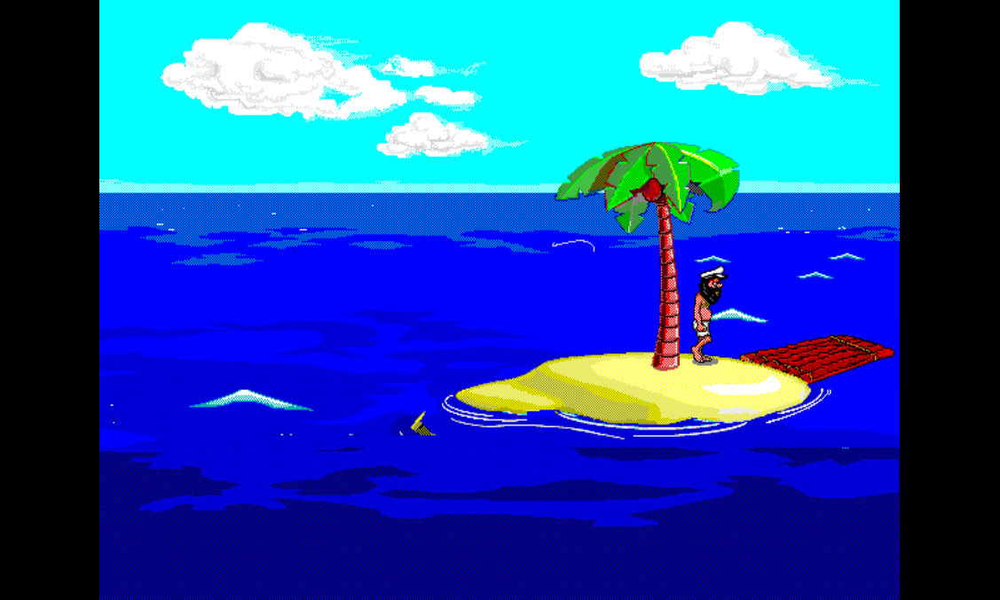

JOHNNY CASTAWAY
Latest playable build
Audio pending
PCSX-ReARMed HLE

Playable in your browser
Run the PS1 screensaver.
Launch Johnny Castaway
Ready to load the latest release.
Player unavailable
The game could not be loaded.
Try again
Enable audio